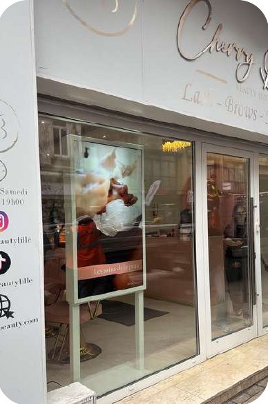

Écran vitrine pour les commerces de Saint-Cyprien
Un des plus grands ports de plaisance de la Méditerranée, un golf, et une clientèle présente bien au-delà de juillet-août. Saint-Cyprien a une saison plus longue que ses voisines — et une exigence différente.

Un port, un golf, et une saison qui déborde largement l'été
C'est ce qui distingue Saint-Cyprien de ses voisines immédiates. Le port de plaisance, l'un des plus importants de la Méditerranée, amène une fréquentation qui commence en avril et se prolonge en octobre : on sort le bateau, on prépare l'hivernage, on vient pour un week-end. Le golf, de son côté, fonctionne précisément aux périodes où la plage est vide, parce qu'on n'y joue pas volontiers sous 35 degrés.
Conséquence directe pour un commerçant : votre écran travaille sur une saison bien plus longue qu'à Canet ou au Barcarès, ce qui change complètement le calcul. Vous n'amortissez pas dix semaines, vous en amortissez une trentaine.
Une clientèle qui regarde d'abord la devanture
Autour du port et des résidences, la clientèle a un pouvoir d'achat supérieur à la moyenne du département et une exigence esthétique qui va avec. Elle remarque immédiatement une vitrine négligée — les affichettes scotchées, le A4 jauni, le prix corrigé au marqueur.
C'est un point à prendre au sérieux, parce qu'il joue dans les deux sens. Un écran mal alimenté, qui affiche encore l'offre de Pâques au mois de septembre, fait plus de mal qu'une vitrine sans écran. C'est aussi pour cela que nous créons la première boucle de dix visuels avec vous et que la formation fait partie de la prestation : l'outil ne vaut que s'il est tenu.
Le port : on y marche lentement, on lit tout
Les quais sont l'un des rares endroits du département où les gens flânent réellement, sans destination précise, souvent en fin de journée. Ils lisent les cartes des restaurants, regardent les vitrines, comparent. C'est le contexte idéal pour un écran : le temps d'attention disponible est bien supérieur à celui d'une rue commerçante classique.
Deux usages ressortent nettement ici. Les restaurants, qui affichent la carte du soir en photo et non en liste. Et les agences immobilières, nombreuses autour du port, dont les annonces se mettent à jour toutes seules depuis leur logiciel de transaction — ce qui compte double sur un marché de résidences secondaires où l'on regarde les vitrines le dimanche.
Le village et la plage, deux autres rythmes
Au village, le commerce est celui d'une commune de quelques milliers d'habitants à l'année : boulangerie, pharmacie, coiffeur, tabac. L'écran y sert à animer une clientèle qui passe tous les jours et qui ne regarde plus une vitrine figée depuis longtemps.
Côté plage et Capellans, la logique redevient saisonnière et estivale, avec les contraintes habituelles du front de mer : plein soleil, air marin, et un flux qui s'effondre à partir de la mi-septembre.
La lumière, toujours la lumière
Les devantures orientées vers les quais ou vers la mer reçoivent une réverbération supplémentaire, celle du plan d'eau. C'est le pire cas de figure pour un écran : un téléviseur grand public, à 300 cd/m², y est illisible une grande partie de la journée. Les écrans vitrine montent jusqu'à 4000 cd/m², avec dalle antireflet et ventilation prévue pour la chaleur derrière une vitre.
Ce que nous installons ici
Le plus souvent un écran vitrine 43 ou 49 pouces en portrait, à 139 ou 149 € HT par mois sur 60 mois, parfois deux côte à côte pour les agences. Les restaurants du port ajoutent volontiers un stop-trottoir numérique à 159 € HT par mois, qui remplace l'ardoise et se rentre le soir.
Le déplacement pour l'étude est compris, et il est indispensable : c'est en regardant l'orientation, la réverbération et la largeur libre qu'on sait quelle taille tient réellement chez vous.
Nos tarifs
Les tarifs sont les mêmes partout dans le département. Ce qui varie, c'est la taille retenue — et au port, on part rarement sur du petit format.
| Mensualité HT, tout compris | 32" | 43" | 49" | 55" | 75" |
|---|---|---|---|---|---|
| Écran vitrine, 48 mois | 159 € | 159 € | 179 € | 189 € | 319 € |
| Écran vitrine, 60 mois | 139 € | 139 € | 149 € | 159 € | 249 € |
| Écran intérieur, 48 mois | 59 € | 69 € | 79 € | 89 € | 129 € |
| Écran intérieur, 60 mois | 49 € | 59 € | 69 € | 79 € | 109 € |
Stop-trottoir numérique 43 pouces sur batterie : 159 € HT par mois sur 48 mois. Panneau LED extérieur : sur devis, fabriqué aux dimensions de l'emplacement. Dimensions des écrans : 32" = 70 × 40 cm, 43" = 96 × 55 cm, 49" = 109 × 63 cm, 55" = 124 × 71 cm, 75" = 168 × 96 cm. Montants hors taxes, sous réserve d'acceptation du dossier de financement.
Estimez votre mensualité dans le simulateur selon la solution, la taille et la durée.
Autour de Saint-Cyprien
Le littoral sud et les métiers les plus présents ici.
Une devanture soignée, visible même hors saison
Nous venons voir l'emplacement, nous mesurons, et nous vous montrons la simulation avec votre enseigne.
Demandez votre étude gratuite
Précisez si vous êtes au port, à la plage ou au village. Au port, la question de la qualité de la devanture se pose différemment.
- Réponse sous 48 heures
- Nous venons voir votre devanture sur place
- Simulation de votre vitrine, sans engagement